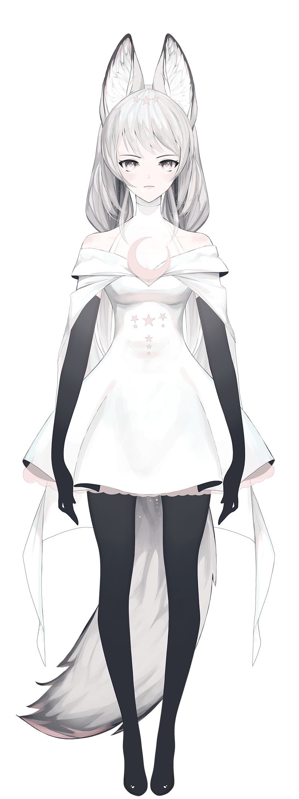

Etoile
Photoshop Live2D | 2020

This is a character I designed and painted pretty quickly to reintroduce myself to Live2D. Small animation demos found below.

A range of motion demo following mouse control on the left.
Motion capture through FaceRig demo on right.